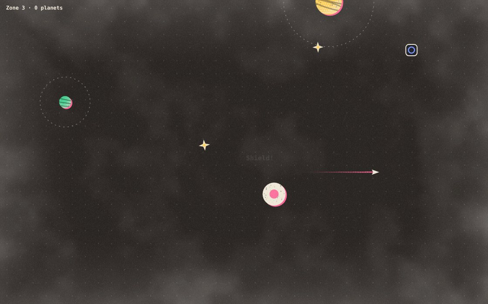
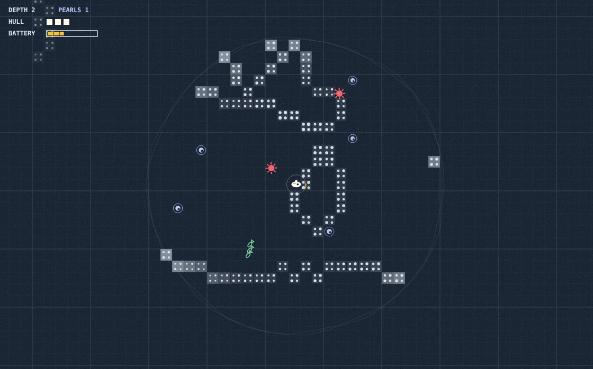
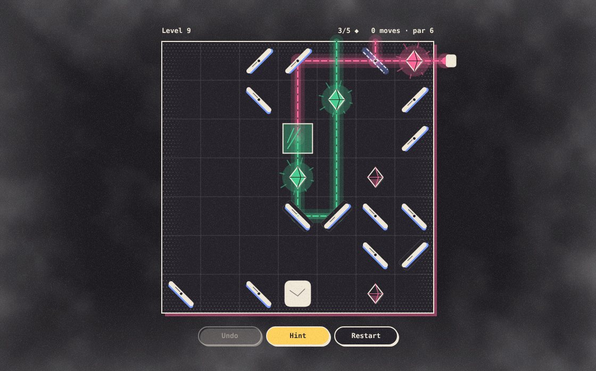
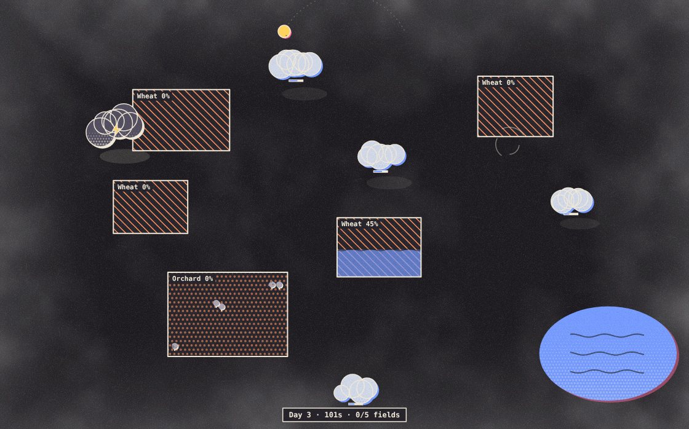
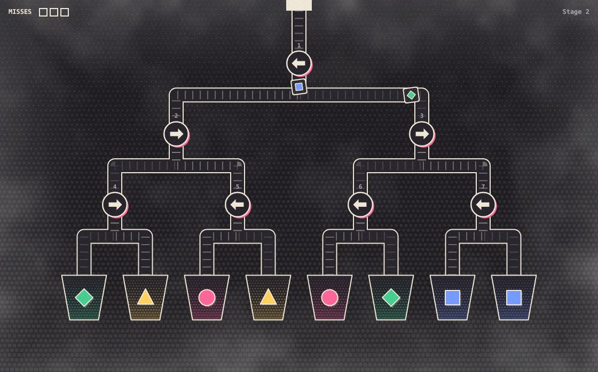
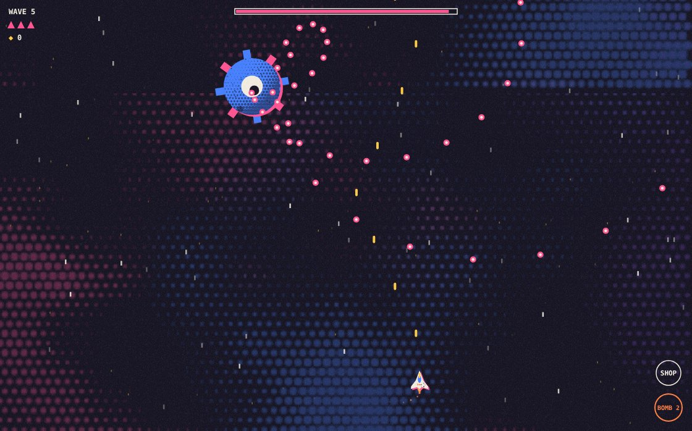
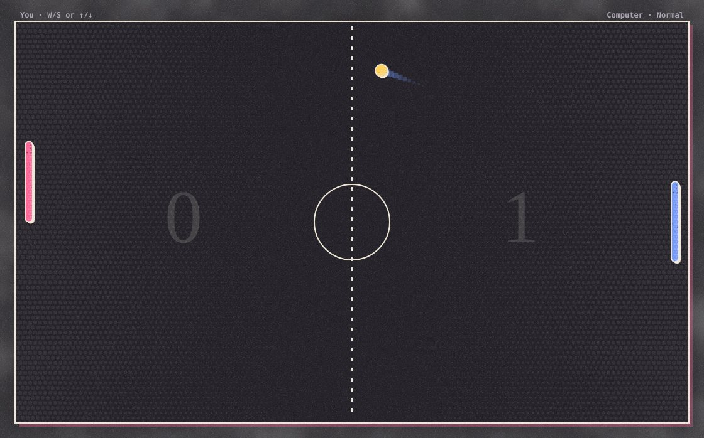
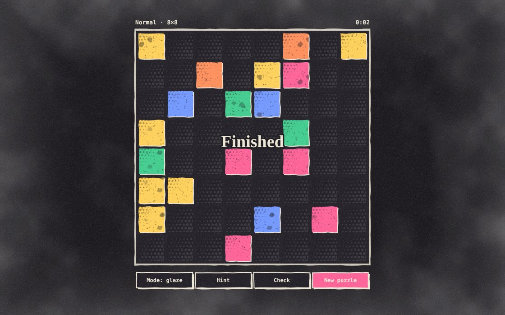

Small games that run in your browser, on a phone or a computer. No sign-up, no ads. Your best scores stay on your device.
Your ship circles a planet. Let go at the right moment and drift into the pull of the next one.
How to play. Tap, click or press Space to let go. Get caught close to the orbit line for a combo. Planets crumble if you stay too long, ice planets spin fast, giants slow, and pulsars only catch you while their field is lit.

A small submarine in pitch-dark water. Your ping shows the walls for a moment, but it also wakes up what lives down there.
How to play. Hold to steer, tap to ping. Each ping costs battery, so ping with care. Rock, metal and creatures echo differently. Pick up pearls and spend them on the sub between dives.

A lamp throws a beam across the board. Turn mirrors until every crystal glows.
How to play. Tap a mirror to turn it. A crystal only lights up when light of its own colour hits it. Splitters, filters and portals join along the way. Solve a board in few moves for three stars.

You are the wind. Push clouds over dry fields until everything blooms before the sun sets.
How to play. Clouds drift away from your pointer or finger. A full cloud waters the field below it, an empty one refills over the lake. Keep storm clouds away, their lightning burns the crops.

Parcels run down a tree of belts. Flip the switches so each one lands in the chute of the same colour and shape.
How to play. Tap a switch to flip it, or press its number. Gold parcels fit anywhere, express parcels are fast, and bombs have to be tapped before they reach the bottom. Every wrong parcel fills a miss box.

A space shooter. Hold the line against wave after wave, with a warden every fifth wave.
How to play. Your ship fires on its own, you only dodge. Drag or use WASD to fly, Shift to slow down, X for a bomb. Enemies drop shards. Press B, Space or the Shop button to pause and buy multishot, lasers, missiles, shields and drones.

A paddle duel. Play the computer, or a friend on the same keyboard.
How to play. Left paddle on W and S, right paddle on the arrow keys. On a phone each half of the screen moves one paddle. The ball speeds up with every hit, and a moving paddle adds spin. First to seven wins.

A logic puzzle. Uncover the picture hidden in a grid of numbered tiles.
How to play. Each number tells you how many tiles in the 3×3 block around it are glazed, itself included. Tap to glaze a tile, tap again to mark it empty, drag to fill several. Every puzzle can be solved without guessing.
